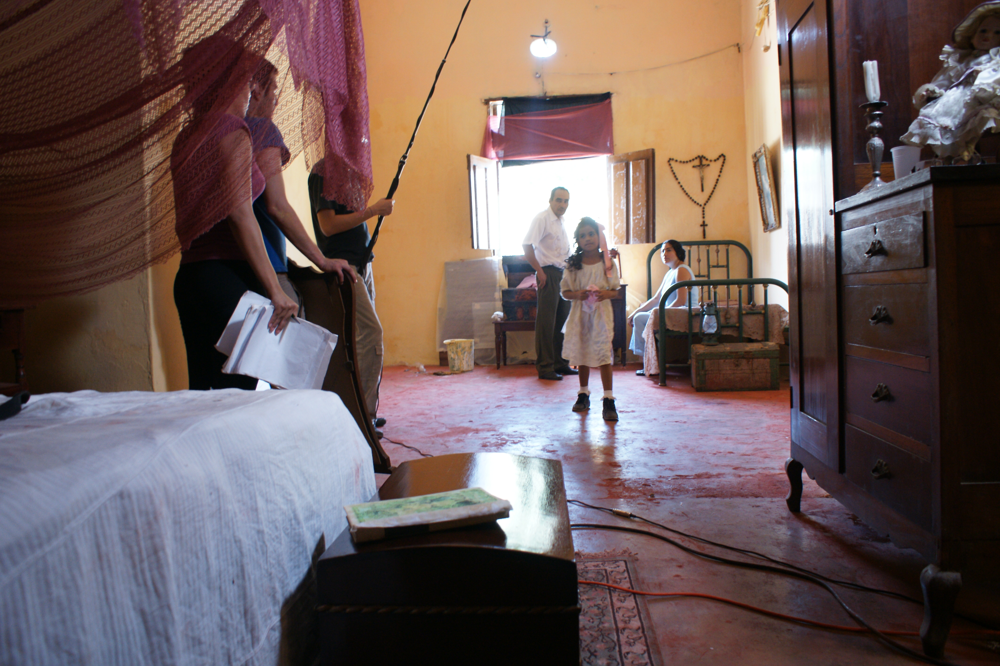

Conoceme y sabras quien soy
En el siguiente parrafo estare dandome a conocer quien soy yo, donde nací, cuales son mis proyecciones, mis gustos y como se fueron de sarrolando esas etapas en mi vida y por ultimo algunas curiosidades que quizas no sabias de mi la cual pudiste conocerme antes pero no quien era realmente, si deseas saber cosa mucho mas personales sobre mi ingresa aqui.. Ir al sitio web.
Soy María Fernanda Celedon nací en Barranquilla en el año 2002 soy la hija unica por parte de mamá, desde pequeña he desarrollado una vocación por resolver
problemas desde que observe un ordenador además de una fábrica aprendí que la ciencias aplicadas ayudan a la vida cotidiana me regalaron una computadora
y siempre las desarmaba por saber sus componentes, el cómo funciona, me interesaba los video juegos que había por el barrio desde que tuve esa oportunidad quise
diseñar video juegos inspirada en la complejidad de las historias y cómo eran posibles.Mi vida académica empezó a la edad de 6 años en el jardín en el cual tenía
un comportamiento muy bueno también era una buena estudiante tenía algo más de esas ganas de aprender desde infante es como la fascinación por el conocimiento.
Todo mi primaria al igual que la secundaria estuve entre los primeros puestos era muy didáctica tuve interés por el volleybol cuando estaba en los grupos en el
colegio tenía la determinación de ser líder me gusta personalmente ayudar a las personas, me encanta estar al tanto del mundo de la tecnología tengo la convicción
de siempre ir mas haya en lo que hago. Actualmente estoy cursando 5 semestre de ing en sistemas en la universidad libre en la cual he hecho mi
carrera académica hasta el momento haciendo parte de un semillero de investigación, así como de diferentes cursos para complementar mi
intereses conducentes a mi carrera. Estos son los datos generales sobre mi si quieres más haz click sobre Ir al sitio web.
- Bailar
Todo empezo desde muy pequeña siempre mi mamá le encantaba que participara en actividades de baile, siempre soñó que estuviera en una comparsa
de cumbia, a mi en realidad no era que me encantara pero era lo que hacia salirme de la rutina.

- Dibujar
Dibujar esta fue la etapa que mi estado de animo influia en mis dibujos, fue una manera de escape de los problemas tan pequeña me influian siempre considere que no fui tan buena
en un principio mis dibujos no salian como lo esperaba y eso fue me frustraba, eso mismo fue lo que considero que hizo con el pasar del tiempo perfeccionar mis dibujos y ser un poco mas detallista...leer mas..

- Actuar Ir a la imagen

Las sisguientes imagenes fueron fotografiadas el 2013 año que fuí escogida por la directora "Diana Lowis" para participar en un cortometraje titulado "Las Muñecas que Hace Juana y no tienen ojos".